01 — Overview
A handover tool for tired cafe staff.
This is a mobile app for cafe and shop workers. At the end of a shift it lets you pass on what got done, leave notes for the next person, and flag anything the manager needs to know, in the couple of minutes it takes to clock out.
It isn't a live product. It's a concept project I built to practice working through a full mobile design problem. To make it feel real, I worked from a fictional research brief as if it had been handed to me by a researcher. My job was to take those findings and turn them into a design.
02 — Reading the research
What I was designing against.
The research was already done, so my first job was to read it. To make the process feel real, I worked from a set of fictional user interviews I put together with the help of AI, based on real cafe and hospitality contexts. I read through them the same way I would real research, looking for patterns, problems and constraints worth designing against.
- 01 The handover happens at the worst moment. Lowest energy, highest urge to leave. Anything that takes real thinking gets skipped or rushed.
- 02 The most important information is skipped most. Cash discrepancies, equipment issues, incidents, because flagging them needs explaining and risks blame.
- 03 Language is a real barrier. Many of the staff interviewed had English as a second language. Dense text fails, meaning has to come from structure and icons.
- 04 Interruption is the default, not the edge case. Handovers get interrupted constantly. The flow has to survive being put down and picked back up.
03 — Ideation
Finding the right flow.
I started by sketching out different ways to structure the handover. The first idea was to guide the user through it step by step, one screen at a time. Finished tasks, then tasks for the next shift, then a report, then a message. The thinking was that by walking people through it, the handover would feel simple and easy to complete.
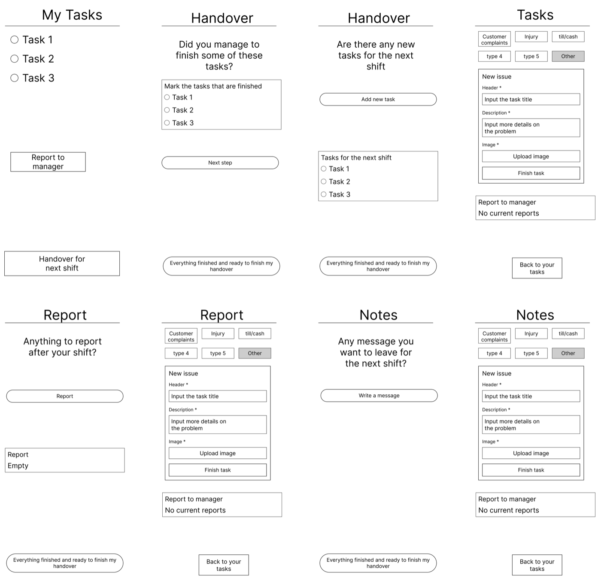
It failed on two counts. It holds a first-time user's hand, but our user does this every shift and needs speed, not guidance. And it forces the whole handover into one block at the end, when the research said the opposite. Handovers get interrupted constantly and need to be built up in pieces across the shift.
So I went with the second flow, a single handover document the user can see and add to at any point during their shift.
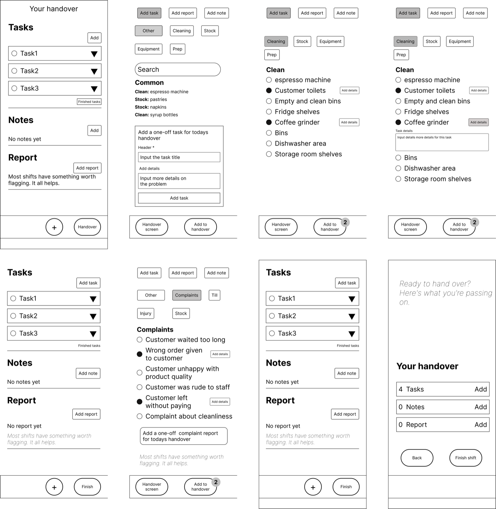
A returning user can scan it and add one thing in seconds. And because nothing is locked behind a linear sequence, an interruption never loses progress. You come back and keep adding where you left off.
One key decision in this flow was having users pick tasks and reports from a categorised list rather than typing them out. Two reasons. Many users are non-English speakers and typing is slow, and it means tasks are consistent across shifts rather than depending on how each staff member words things.
04 — Wireframes and testing
What testing changed.
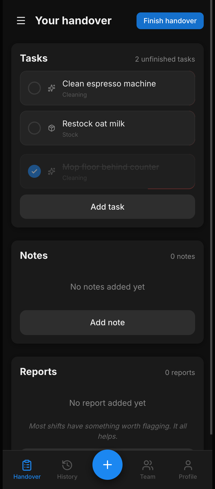
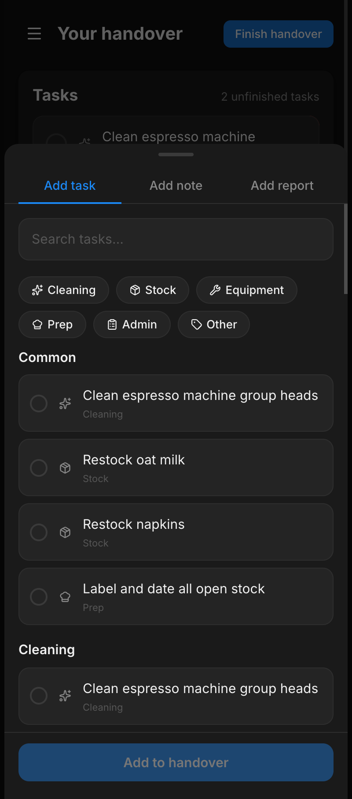
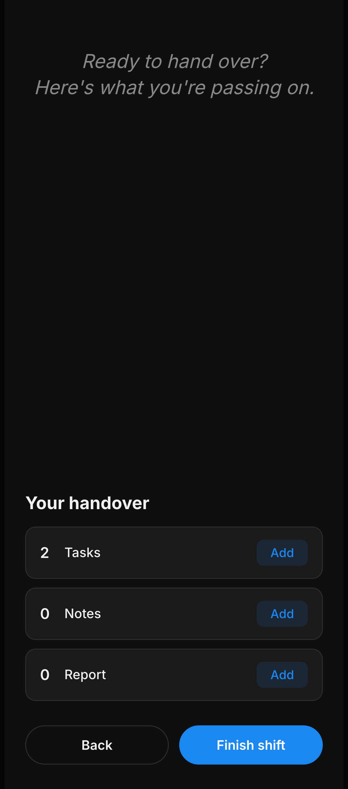
I designed the wireframe flow in Figma and built a working prototype with Claude Code. I then tested it with a small group of people, giving them realistic end-of-shift tasks and watching without helping. A few clear problems came up:
- 01 Users did not realise they could tap on a task card to expand it and add details to it. Fix: make the whole card tappable.
- 02 The note title field confused everyone. People tried to write the whole message into the title. Fix: drop the title, a note is just a note.
- 03 Adding a one-off task was buried. Fix: a visible one-off button so unusual tasks have an obvious home.
- 04 One participant said the app felt like reporting to a manager. Fix: warmer copy throughout and a friendlier confirmation screen.
05 — Final design
The final design.
The brief was clear: tired staff, one hand, often not native English speakers, and it needed to be fast. The final design answers those constraints directly. A single screen handover document with structured task lists, minimal typing, and a flow that can be interrupted and picked back up at any point. Light mode first with a full dark mode built in from the start.
Try it yourself.
Scroll, tap and interact with the working prototype below. Or open it full screen here.
The handover screen.
The main screen gives a clear overview of everything in the handover. Users can come back to it at any point during their shift to check off tasks, add new ones, or leave details on existing ones. Each card is designed to be quick to interact with. Checking off, expanding for details, or deleting all take minimal effort.
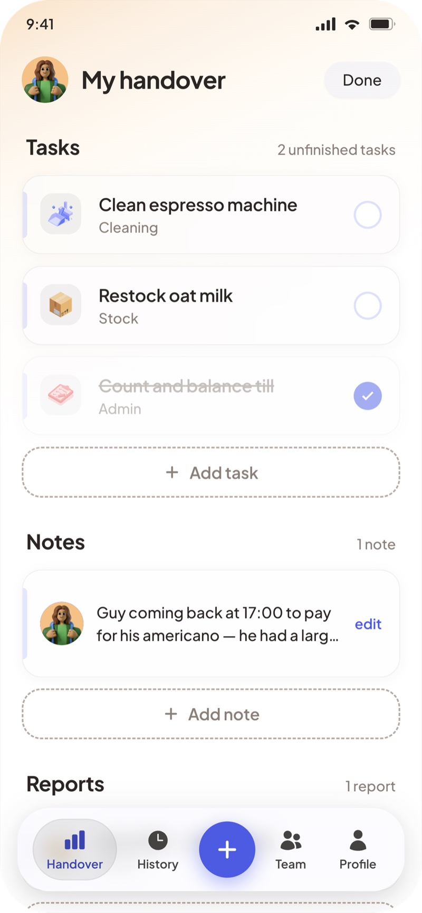
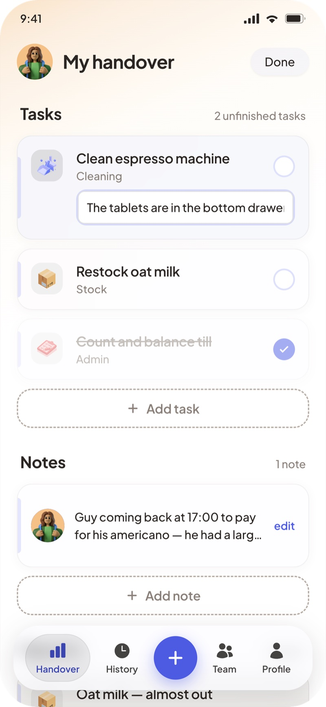
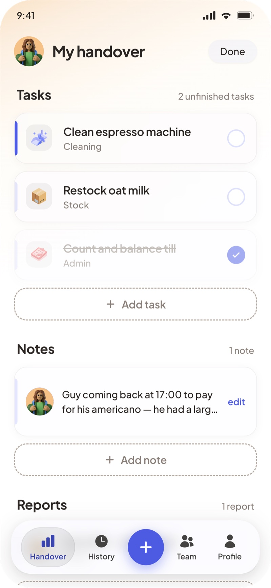
Adding tasks, notes and reports.
All tasks and reports are organised into categories so typing is kept to a minimum. Users pick from a list rather than writing from scratch, which matters when many staff are non-English speakers. Search makes finding a specific task quick, and if something unusual comes up that isn't in the list, adding a one-off task is straightforward.
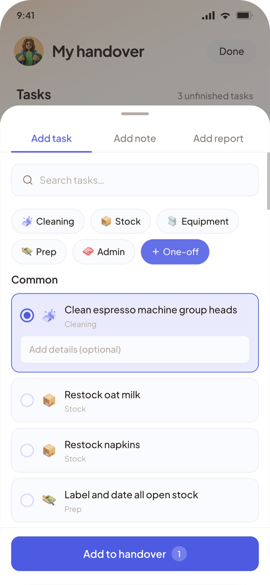
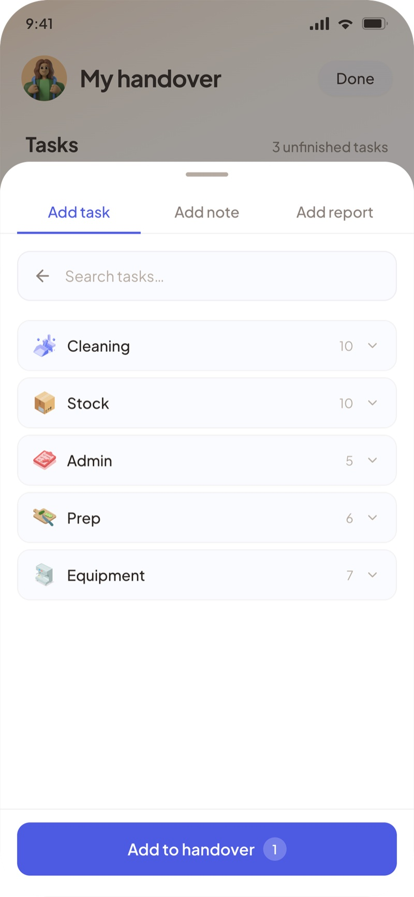
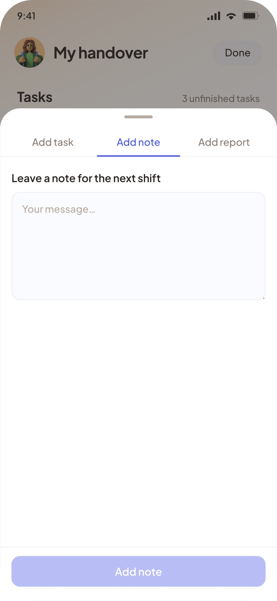
The confirmation screen.
The final screen does two things. It gives the user one last look at their handover so they can think about whether anything is missing. And it should feel calm. The shift is done, the next person has what they need.
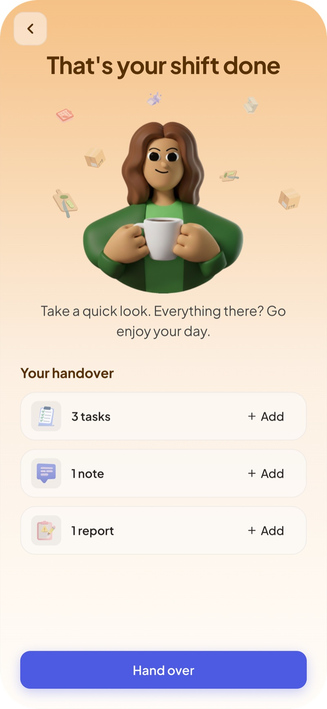
Dark mode.
Dark mode was built into the design system from the start.
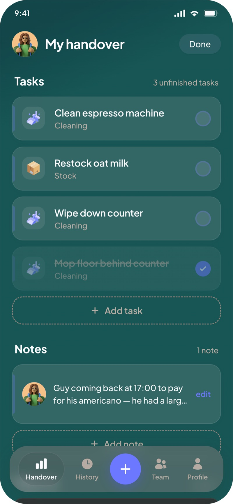
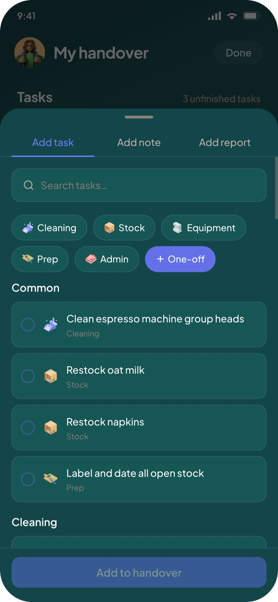
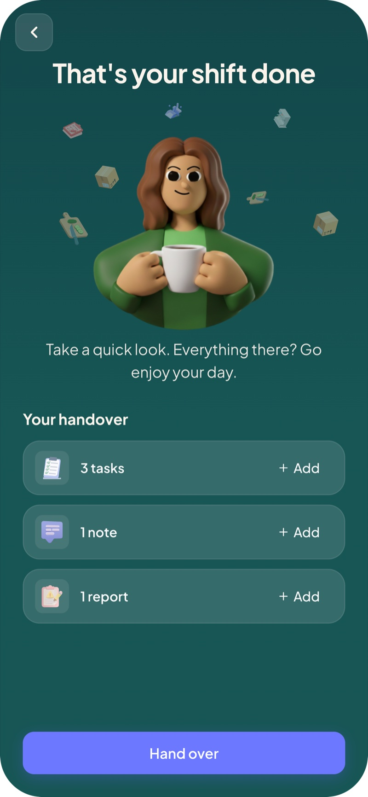